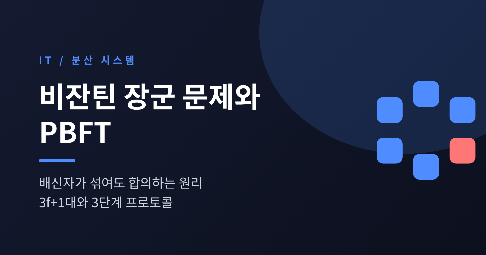
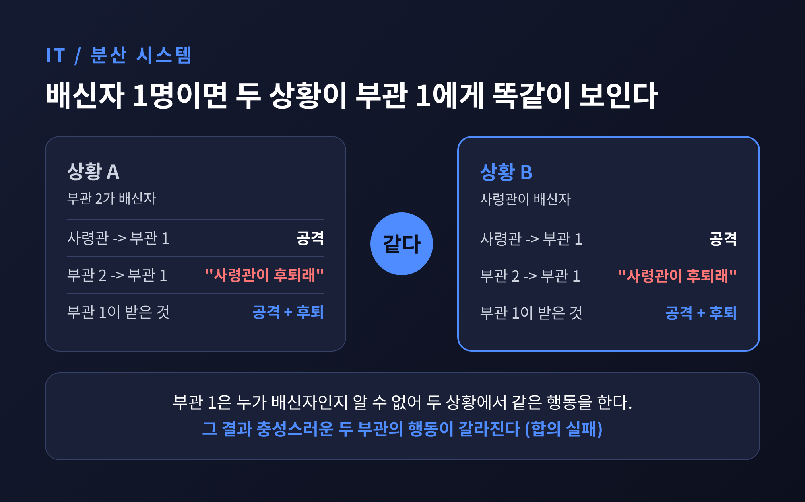
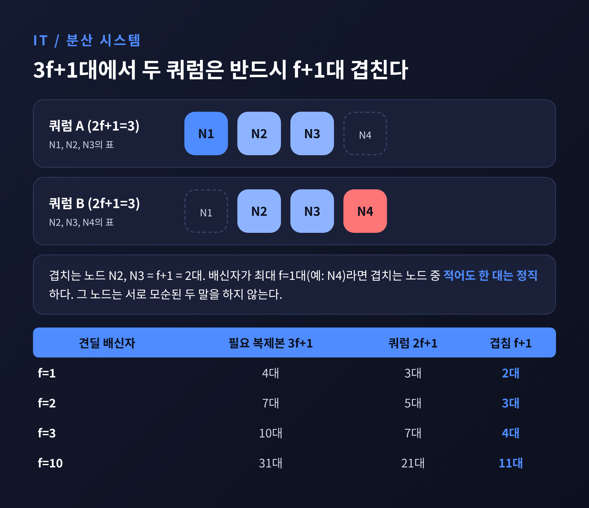
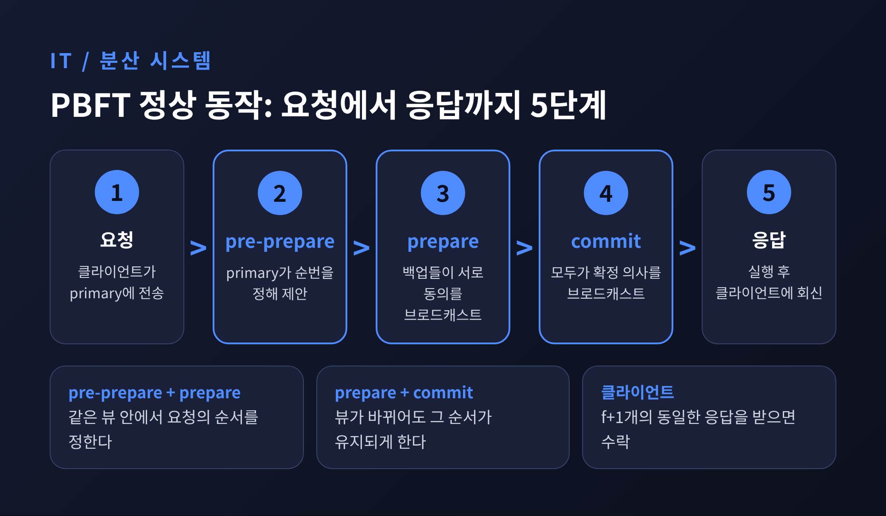
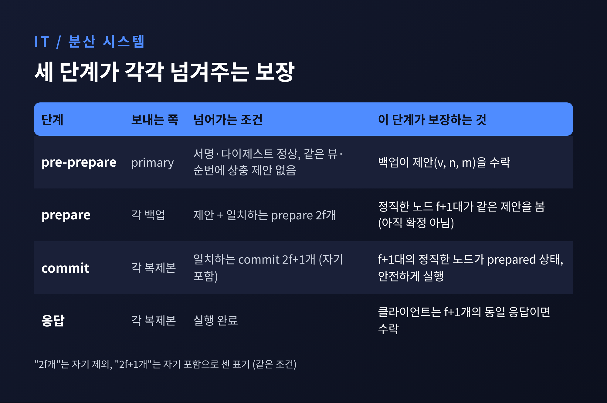
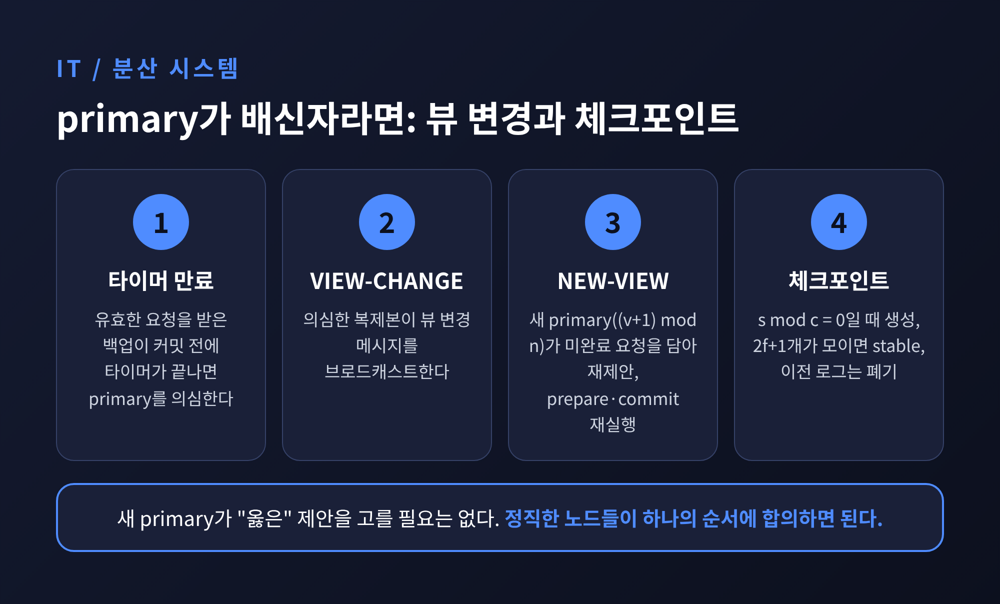
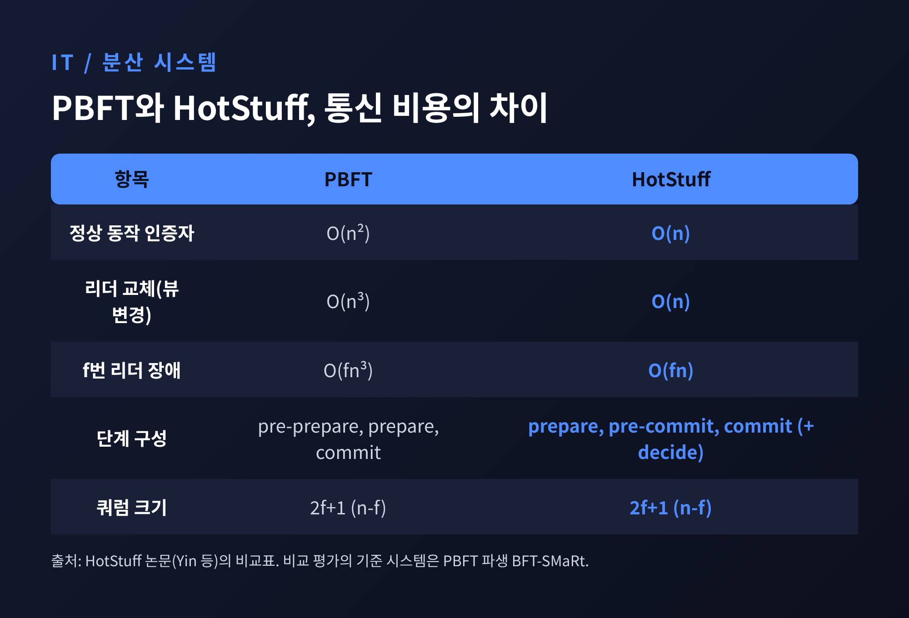

세 줄 요약
오늘은 비잔틴 장군 문제와 PBFT(Practical Byzantine Fault Tolerance)에 대해 이야기해 보려 합니다.
일부 노드가 고장 난 정도가 아니라 악의적으로 거짓말을 해도 시스템이 하나의 결론에 이르는 방법입니다.
왜 하필 3f+1대인지, 세 단계가 각각 무엇을 보장하는지를 차례로 풀어 보겠습니다.
1982년 Lamport, Shostak, Pease는 ACM TOPLAS에 「The Byzantine Generals Problem」을 발표했습니다.
적 도시를 둘러싼 장군들이 전령으로 공격 여부를 정해야 하고, 장군 중 일부는 배신자라는 설정입니다.
배신자는 상대에 따라 서로 다른 말을 전할 수 있습니다.
조건은 두 가지입니다. 충성스러운 부관은 모두 같은 명령을 따라야 합니다.
그리고 사령관이 충성스럽다면, 충성스러운 부관은 그 명령을 따라야 합니다.
장군이 셋이고 배신자가 한 명인 경우를 보겠습니다.
첫 번째 상황에서는 사령관이 충성스러워 "공격"을 명령하지만, 부관 2가 배신자입니다.
부관 2는 부관 1에게 "사령관이 후퇴라고 했다"고 전합니다.
부관 1은 사령관의 명령을 따라야 하므로 공격을 택합니다.
두 번째 상황에서는 사령관이 배신자입니다. 부관 1에게는 "공격", 부관 2에게는 "후퇴"를 보냅니다.
부관 1이 받는 메시지는 첫 번째 상황과 똑같습니다. 그래서 이번에도 공격합니다.
부관 2는 후퇴하고, 충성스러운 두 부관이 서로 다른 행동을 하게 됩니다.
부관 1에게는 이 두 상황이 구별되지 않습니다. 이것이 핵심입니다.

논문은 여기서 일반 결론을 끌어냅니다.
구두 메시지만 쓰면 배신자가 m명일 때 장군이 3m+1명 이상이어야 합니다.
달리 말해 충성스러운 장군이 3분의 2를 넘어야 합의가 가능합니다.
예전엔 "하나만 고장 나도 어렵다"고 느꼈던 문제가, 이제는 정확한 수식으로 한계가 그어진 셈입니다.
한 가지 짚어 둘 점이 있습니다. 위조할 수 없는 서명이 있으면 이야기가 달라집니다.
논문의 서명 메시지 알고리즘은 장군 수와 배신자 수에 상관없이 문제를 풉니다.
다만 이는 서명이 절대 위조되지 않고, 메시지 누락을 감지할 수 있는 동기 시스템이라는 가정 위에 서 있습니다.
참고로 논문은 '비잔틴'이라는 이름을 붙인 이유를 따로 설명하지 않습니다.
Lamport의 논문 목록에는 이 용어가 해당 논문에서 처음 등장했다고 적혀 있습니다.
PBFT는 1999년 2월 OSDI에서 Castro와 Liskov가 발표했습니다.
비잔틴 내성은 비현실적이라는 인식을 바꾼 연구로 평가받습니다.
이 논문에서도 결함 노드는 무응답, 오답, 고의적 오도, 구역별로 다른 답 전송 등 무엇이든 할 수 있습니다.
복제본은 n = 3f+1대를 둡니다. f대가 비잔틴이어도 견딘다는 뜻입니다.
f=1이면 4대, f=3이면 10대입니다. 발표 자료는 f가 1에서 10까지 늘면 복제본이 30대 안팎까지 불어난다고 지적합니다.
이유는 기다리는 수에 있습니다.
전부를 기다리면, 응답하지 않는 f대 때문에 영원히 멈출 수 있습니다.
그래서 각 단계에서는 자기 표를 포함해 2f+1표만 모이면 다음으로 넘어갑니다.
그러면 2f+1표 안에 가짜가 섞일 수 있습니다. 여기서 쿼럼 교차가 작동합니다.
3f+1대 중 2f+1 크기의 집합 두 개는 최소 f+1개 노드가 겹칩니다.
결함 노드는 최대 f대이므로, 겹치는 노드 중 적어도 하나는 정직합니다.
서로 다른 두 쿼럼이 모순된 결정을 내리려면 그 정직한 노드가 두 말을 해야 하는데, 정직한 노드는 그러지 않습니다.
이것이 안전성의 근거입니다.

클라이언트가 기다리는 수는 f+1입니다.
f+1개의 일치하는 응답 중에는 반드시 정직한 복제본의 응답이 하나 있습니다.
정직한 복제본은 커밋이 끝난 뒤에만 응답하므로, 그 답은 믿을 만합니다.
정상 동작은 이렇게 흘러갑니다. 클라이언트가 리더 역할의 primary에 요청을 보냅니다.
primary는 순번을 매겨 나머지 복제본에 알립니다. 이후 세 단계를 거쳐 실행하고 클라이언트에 답합니다.

1단계는 pre-prepare입니다.
primary가 뷰 번호 v, 순번 n, 요청 m을 서명해 제안합니다.
백업은 서명과 다이제스트가 맞고, 같은 뷰와 순번에 상충하는 제안을 받은 적이 없을 때만 받아들입니다.
다만 백업은 primary가 다른 복제본에게 다른 내용을 보냈는지는 알 수 없습니다.
2단계는 prepare입니다.
각 백업이 "나는 이 제안을 받았다"고 모두에게 브로드캐스트합니다.
제안과 일치하는 prepare가 2f개 모이면 그 복제본은 prepared 상태가 됩니다.
이때 정직한 노드 f+1대가 같은 제안을 봤다는 사실은 확인됩니다.
그러나 다른 정직한 노드는 상충하는 제안을 봤을 수 있어, 여기서 바로 확정하면 위험합니다.
3단계는 commit입니다.
복제본이 commit을 브로드캐스트하고, 자기 것을 포함해 2f+1개의 일치하는 commit을 모으면 확정합니다.
그 시점에는 f+1대의 정직한 노드가 prepared 상태라는 점을 알고 있으므로, 안전하게 실행할 수 있습니다.
실행한 뒤 클라이언트에 답을 보냅니다.
정리하면 앞의 두 단계는 같은 뷰 안에서 요청의 순서를 정합니다.
뒤의 두 단계는 뷰가 바뀌어도 그 순서가 유지되도록 붙잡아 둡니다.

참고로 "2f개의 prepare"와 "자기 포함 2f+1"은 같은 조건을 세는 방식만 다른 표기입니다. 자료마다 다르게 쓰니 헷갈리지 않으시길 바랍니다.
primary 자신이 악의적이면 어떻게 될까요.
백업은 유효한 요청을 받으면 타이머를 켭니다. 커밋 전에 타이머가 끝나면 primary를 의심하고 VIEW-CHANGE 메시지를 보냅니다.
새 primary는 (v+1) mod n번 노드가 맡습니다. 리더가 순번대로 돌아가는 구조입니다.
새 primary는 NEW-VIEW 메시지에 미완료 요청 목록을 담아 다시 제안하고, 모두가 prepare와 commit을 다시 돌립니다.
새 primary가 "옳은" 제안을 골라야 하는 것은 아닙니다. 정직한 노드들이 하나의 순서에 합의하기만 하면 됩니다.
또 결함 노드 f대만으로는 뷰 변경을 일으킬 수 없도록, 정족수 규모의 요청이 필요합니다.
로그가 끝없이 쌓이는 문제는 체크포인트로 줄입니다.
순번 s가 체크포인트 주기 c로 나누어떨어질 때 체크포인트를 만들고 알립니다.
2f+1개의 체크포인트 메시지가 모이면 stable checkpoint가 되어, 그 이전의 메시지와 체크포인트는 버려도 됩니다.

솔직히 이 부분은 PBFT에서 가장 까다롭습니다.
한 서베이 논문은 뷰 변경 프로토콜에 코너 케이스가 많아 설계와 구현이 어렵다고 지적합니다.
PBFT는 인증에도 공을 들였습니다.
서명만 쓰지 않고, 요청에 복제본별 MAC을 하나씩 담은 authenticator로 공개키 암호 의존을 줄였습니다.
저자들이 후속 평가에서 MAC을 끄자 처리량이 최적 설정의 7.5%로 떨어졌다고 하니, 효과가 작지 않았습니다.
하지만 한계도 분명합니다.
첫째는 통신량입니다. 정상 동작에서 prepare와 commit이 모두에게 퍼지므로 O(n²)입니다.
리더를 바꾸는 과정은 인증자 기준 O(n³)까지 늘어납니다.
복제본이 늘수록 비용이 급격히 커집니다.
둘째는 독립성 가정입니다.
복제본의 장애가 서로 독립이어야 하는데, 같은 소프트웨어 버그나 같은 공격자는 여러 노드를 한꺼번에 무너뜨릴 수 있습니다.
PBFT는 독립적으로 생긴 버그는 가려내지만, 모든 복제본에 똑같이 있는 버그는 막지 못합니다.
셋째는 운영 환경의 현실입니다.
2011년경 한 재평가는 클라이언트와 복제본이 미리 서로를 알아야 하는 정적 멤버십, UDP 패킷 손실의 처리 문제를 꼽았습니다.
또 4개 복제본 기준 널(null) 연산은 기본 설정에서 초당 약 17,000건이었지만, 가장 견고한 설정에서는 약 1,000건으로 내려갔습니다.
실제 데이터베이스 연산에서는 널 연산보다 두 자릿수 낮았다고 합니다.
이 한계를 넘으려는 시도가 이어졌습니다.
HotStuff는 단계마다 리더가 모으고 부분 서명으로 응답받는 방식으로, 정상 동작과 뷰 변경 모두 O(n) 인증자로 줄였습니다.
SBFT는 임계 서명으로 정상 동작을 O(n)으로 낮췄습니다.
Tendermint 역시 검증자의 3분의 1 미만이 비잔틴이면 안전하다는 같은 숫자 위에서 동작합니다.

정리하면 이렇습니다.
예전엔 비잔틴 장애를 견디려면 비현실적인 비용이 든다고 여겨졌습니다. 지금은 쿼럼과 3단계라는 구조로 그 비용의 윤곽이 분명해졌습니다.
다만 3f+1대라는 숫자와 O(n²) 통신은 지금도 그대로 남은 대가입니다.
결국 남는 것은 하나입니다. "정직한 쿼럼이 반드시 겹치게 하라."
악의적인 노드를 가려내는 것이 아니라, 가려내지 못해도 결론이 갈라지지 않는 구조를 만드는 일이었습니다.
내가 전해 들은 말이 거짓일 수 있다는 전제에서 신뢰를 설계한다면, 어디까지 단단해질 수 있는지 한 번쯤 따져 보시길 권합니다.